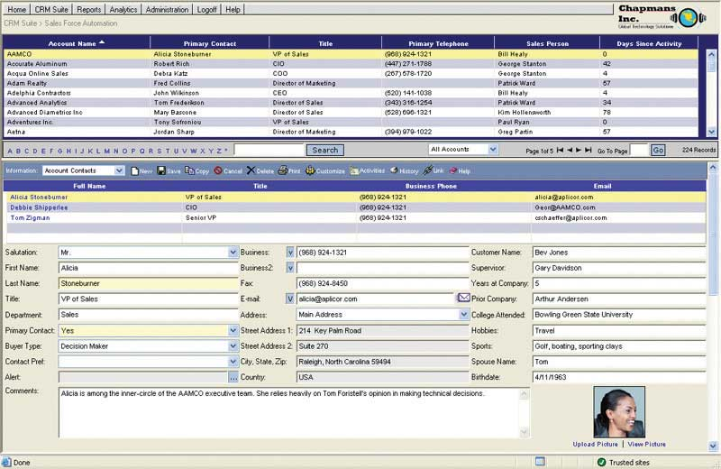
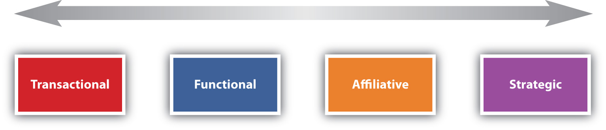
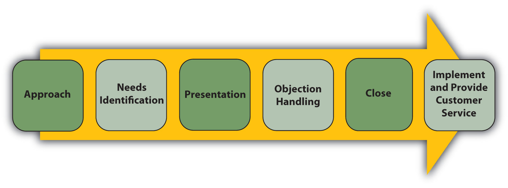
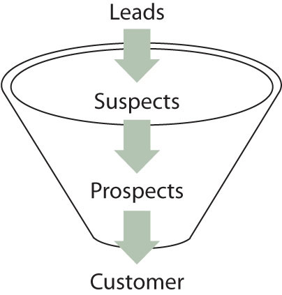
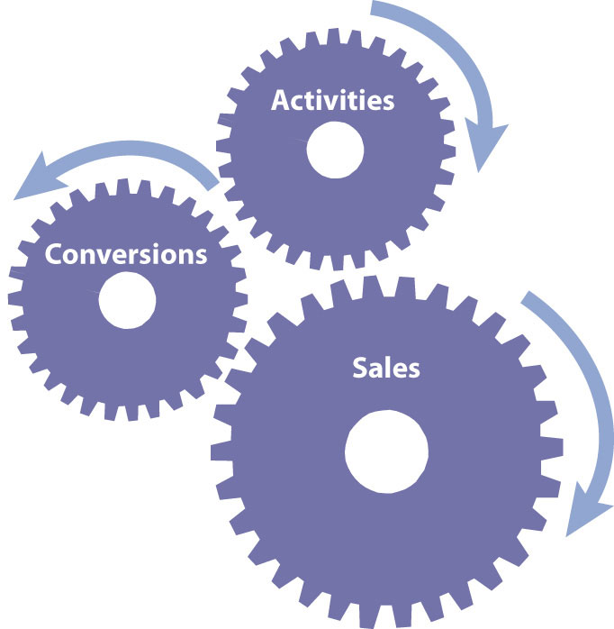
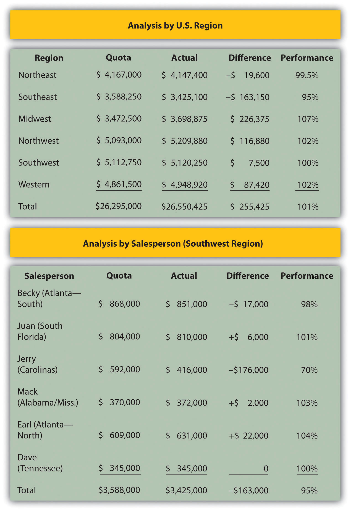

The clock in Ted Schulte’s home office was striking 11:00 p.m. His children had gone to bed hours ago. Yet Schulte, an account representative who sells pacemakers for Guidant, was on the phone talking to one of his clients, a cardiologist. The cardiologist was performing surgery at 7:00 a.m. the next day. His patient had a number of health problems that caused the doctor to question which pacemaker would best suit her needs. The cardiologist’s questions had to be answered immediately so the right materials and tools would be available for the procedure. The best expert on the matter was not another physician in this case—it was Schulte.
When you visit your physician, you want to think that her training and education have completely prepared her for dealing with whatever condition sent you there. The reality is, however, that salespeople play a major role in her continuing education. Similarly, the house or apartment you live in may have been designed by an architect, but that architect’s choices in materials and design elements were influenced by salespeople, each of whom are experts in a particular product category. Not only was the food you eat sold to the grocery store by a salesperson, but the ingredients were also sold to the food companies by salespeople.
Salespeople play an important role in our economy. They are vital to customers and companies alike. In this chapter, we explore the role professional selling plays in terms of a company’s marketing strategy. We also look at the factors that enhance a firm’s success when it markets and sells its products through salespeople.
You’ve created a great product, you’ve priced it right, and you’ve set a wonderful marketing communication strategy in motion. Now you can just sit back and watch the sales roll in, right? Probably not. Unless your company is able to sell the product entirely over the Internet, you probably have a lot more work to do. For example, if you want consumers to be able to buy the product in a retail store, someone will first have to convince the retailer to carry the product.
“Nothing happens until someone sells something,” is an old saying in business. But in reality, a lot must happen before a sale can be made. Companies count on their sales and marketing teams not only to sell products but to the lay the groundwork to make it happen. However, salespeople are expensive. Often they are the most expensive element in a company’s marketing strategy. As a result, they have to generate business in order to justify a firm’s investment in them.
Salespeople act on behalf of their companies by doing the following:
In addition to acting on behalf of their firms, sales representatives also act on behalf of their customers. Whenever a salesperson goes back to her company with a customer’s request, be it for quicker delivery, a change in a product feature, or a negotiated price, she is voicing the customer’s needs. Her goal is to help the buyer purchase what serves his or her needs the best. Like Ted Schulte, the salesperson is the expert but, in this case, an expert representing the customer’s needs back to the company.
From society’s perspective, selling is wonderful when professional salespeople act on behalf of both buyers and sellers. The salesperson has a fiduciary responsibility (in this case meaning something needs to be sold) to the company and an ethical responsibility to the buyer. At times, however, the two responsibilities conflict with one another. For example, what should a salesperson do if the product meets only most of a buyer’s needs, while a competitor’s product is a perfect fit?
Salespeople also face conflicts within their companies. When a salesperson tells a customer a product will be delivered in three days, she has made a promise that will either be kept or broken by her company’s shipping department. When the salesperson accepts a contract with certain terms, she has made a promise to the customer that will either be kept or broken by her company’s credit department. What if the credit department and shipping department can’t agree on the shipping terms the customer should receive? Which group should the salesperson side with? What if managers want the salesperson to sell a product that’s unreliable and will swamp the company’s customer service representatives with buyers’ complaints? Should she nonetheless work hard to sell the offering?
Situations such as these create role conflict. Role conflictA situation in which someone faces competing expectations from two or more people or groups; for example, a salesperson who has a customer who wants one thing and a boss who wants another. occurs when the expectations people set for you differ from one another. Now couple the situation we just mentioned with the fact that the salesperson has a personal interest in whether the sale is made or not. Perhaps her income or job depends on it. Can you understand how role conflict might result in a person using questionable tactics to sell a product?
So are salespeople dishonest? Many people think so in part because certain types of salespeople have earned poor reputations that have tarnished the entire profession. As a result, some business students avoid sales despite the very high earnings potential and personal growth opportunities. You might be surprised to learn, however, that one study found that salespeople are less likely to exaggerate in order to get what they want than politicians, preachers, and professors. Another study looked at how business students responded to ethical dilemmas versus how professional salespeople responded. What did the study find? That salespeople were more likely to respond ethically than students were.
In general, salespeople handle these conflicting expectations well. Society benefits because salespeople help buyers make more informed decisions and help their companies succeed, which, in turn, creates jobs for people and products they can use. Most salespeople also truly believe in the effectiveness of their company’s offerings. Schulte, for example, is convinced that the pacemakers he sells are the best there are. When this belief is coupled with a genuine concern for the welfare of the customer—a concern that most salespeople share—society can’t lose.
Most marketing majors begin their career in sales. While a growing number of universities are offering a major in sales, the demand for professional salespeople often outstrips supply, creating opportunities for marketing majors. Sales is a great place to start a career not only because the earnings are at the top of any business major but because sales is the only place to really learn what is happening in the market.
Consider the following situations:
All these are true stories of how salespeople create value by understanding the needs of their customers and then create solutions to meet those needs. Salespeople can adapt the offering, such as in the Sanderson Farms example, or they can adapt how they present the offering so that it is easier for the client to understand and make the right decision.
Adapting a message or product on the fly isn’t something that can be easily accomplished with other types of marketing communication. Granted, some Web sites are designed to adapt the information and products they display based on what a customer appears to be interested in while he or she is looking at the sites. But unless the site has a “chat with a representative” feature, there is no real dialogue occurring. The ability to engage in dialogue helps salespeople better understand their customers and their needs and then create valuable solutions for them.
Note also that creating value means making sales. Salespeople sell—that’s the bulk of the value they deliver to their employers. There are other ways in which they deliver value, but it is how much they sell that determines most of the value they deliver to their companies.
Salespeople aren’t appropriate channels for companies in all situations, however. Some purchases don’t require the salesperson’s expertise. Or the need to sell at a very low cost may make retail stores or online selling more attractive. But in situations requiring adaptation, customer education, and other value-adding activities, salespeople can be the best channel to reach customers.
Because their time is limited, sales representatives have to decide which accounts they have the best shot at winning and which are the most lucrative. Once a salesperson has decided to pursue an account, a strategy is devised and implemented, and if a sale happens, the salesperson is also responsible for ensuring that the offering is implemented properly and to the customer’s satisfaction.
We’ve already emphasized the notion of “customers for life” in this book. Salespeople recognize that business is not about making friends, but about making and retaining customers. Although buyers tend to purchase products from salespeople they like, being liked is not enough. Salespeople have to ensure that they close the deal with the customer. They also have to recognize that the goal is not to just close one deal, but as many deals as possible in the future.
Salespeople are boundary spannersPeople who work both inside and outside their organizations. Salespeople are boundary spanners., in that they operate outside the boundaries of the firm and in the field. As such, they are the first to learn about what competitors are doing. An important function for them, then, is to report back to headquarters about their competitors’ new offerings and strategies.
Similarly, salespeople interact directly with customers and, in so doing, gather a great deal of useful information about their needs. The salespeople then pass the information along to their firms, which use it to create new offerings, adjust their current offerings, and reformulate their marketing tactics. The trick is getting the information to the right decision makers in firms. Many companies use customer relationship management (CRM) software like Netsuite or Salesforce.com to provide a mechanism for salespeople to enter customer data and others to retrieve it. A company’s marketing department, for example, can then use that data to pinpoint segments of customers with which to communicate directly. In addition to using the data to improve and create and marketing strategies, the information can also help marketing decision makers understand who makes buying decisions, resulting in such decisions as targeting trade shows where potential buyers are likely to be. In other words, marketing managers don’t have to ask salespeople directly what customers want; they can pull that information from a customer database. (For an online demonstration of Aplicor, visit http://www.aplicor.com/product_tour.php.)
Figure 13.1
Aplicor is a computer software program that enables salespeople to capture and track information on their accounts. This information can then be used by marketing mangers to design better marketing strategies and offerings. The system also helps salespeople manage their accounts better, because they have access to more customer information.
Source: Aplicor, used with permission.
There are different ways to categorize salespeople. They can be categorized by the customers they work with, such as whether they are consumers, other businesses, or government institutions. Another way to categorize salespeople is by the size of their customers. Most professional sales positions involve selling to other businesses, but many also sell to consumers like you. For the purposes of this book, we will categorize salespeople by their activities. Using activities as a basis, there are four basic types of salespeople: missionary salespeople, trade salespeople, prospectors, and account managers. In some discussions, you’ll hear that there are three types: order gettersA salesperson who actively solicits purchases from customers., order takersA salesperson whose primary responsibility is fielding requests from customers who either come into the company’s location (store or distributorship) or call or contact a contact center., and sales supportA staff that helps salespeople by pricing and by preparing proposals and other pre-sale and post-sale activities.. The four we describe in the following are all types of order getters; that is, they actively seek to make sales by calling on customers. We’ll also discuss order takers and sales support after we discuss the four types of order getters.
A missionary salespersonA salesperson who calls on people who make decisions about products but don’t actually buy them. calls on people who make decisions about products but don’t actually buy them, and while they call on individuals, the relationship is business-to-business. For example, a pharmaceutical representative might call on a physician to provide the doctor with clinical information about a medication’s effectiveness. The salesperson hopes the doctor will prescribe the drug. Patients, not doctors, actually purchase the medication. Similarly, salespeople call on your professors urging them to use certain textbooks. But you, the student, choose whether or not to actually buy the books.
There are salespeople who also work with “market influencers.” Mary Gros works at Teradata, a company that develops data warehousing solutions. Gros calls on college faculty who have the power to influence decision makers when it comes to the data warehouses they use, either by consulting for them, writing research papers about data warehousing products, or offering opinions to students on the software. In an effort to influence what they write about Teradata’s offerings, Gros also visits with analysts who write reviews of products.
A trade salespersonSomeone who calls on retailers and provides them assistance with merchandising and selling products to consumers. is someone who calls on retailers and helps them display, advertise, and sell products to consumers. Eddy Patterson is a trade salesperson. Patterson calls on major supermarket chains like HEB for Stubb’s Bar-B-Q, a company that makes barbecue sauces, rubs, marinades, and other barbecuing products. Patterson makes suggestions about how Stubb’s products should be priced and where they should be placed in store so they will sell faster. Patterson also works with his clients’ advertising departments in order to create effective ads and fliers featuring Stubb’s products.
Figure 13.2
Trade salespeople like Eddy Patterson for Stubb’s help retailers promote and sell products to consumers.
Source: Photo courtesy of Stubb’s Legendary Kitchen.
A prospectorA salesperson whose primary responsibility is prospecting, or finding potential customers. The salesperson might be responsible for closing the sales or simply turning the prospects over to someone else to close. is a salesperson whose primary function is to find prospects, or potential customers. The potential customers have a need, but for any number of reasons, they are not actively looking for products to meet those needs—perhaps because they lack information about where to look for them or simply haven’t had the time to do so. Prospectors often knock on a lot of doors and make a lot of phone calls, which is called cold calling because they do not know the potential accounts and are therefore talking to them “cold.” Their primary job is to sell, but the activity that drives their success is prospecting. Many salespeople who sell to consumers would be considered prospectors, including salespeople such as insurance or financial services salespeople, or cosmetic salespeople such as those working for Avon or Mary Kay.
In some B2B situations, the prospector finds a prospect and then turns it over to another salesperson to close the deal. Or the prospector may take the prospect all the way through the sales process and close the sale. The primary responsibility is to make sales, but the activity that drives the salesperson’s success is prospecting.
Account managersA salesperson responsible for ongoing business with a customer who uses a product. Satisfying long-term customers and persuading them to reorder products are important activities for account managers. are responsible for ongoing business with a customer who uses a product. A new customer may be found by a prospector and then turned over to an account manager, or new accounts may be so rare that the account manager is directly responsible for identifying and closing them. For example, if you sold beds to hospitals, new hospital organizations are rare. A new hospital may be built, but chances are good that it is replacing an existing hospital or is part of an existing hospital chain, so the account would already have coverage.
Figure 13.3
Taylor Bergstrom, who began his career as a sales representative for the Texas Rangers baseball team, is now an account manager for the club. Some of the deals he closes are worth hundreds of thousands of dollars.
Source: Taylor Bergstrom, used with permission.
Taylor Bergstrom, a Baylor University graduate, began his career as a sales representative prospecting for the Texas Rangers baseball team. Bergstrom spent a lot of time calling people who had purchased single game tickets in an effort to sell them fifteen-game packages or other special-ticket packages. Today, Bergstrom is an account manager for the club. He works with season ticket holders to ensure that they have a great experience over the course of a season, regardless of whether the Rangers win or lose. His sales goals include upgrading season ticket holders to more expensive seats, identifying referral opportunities for new season-ticket sales, and selling special-event packages, such as party packages to box-seat holders. While most account managers sell to businesses, some, like Bergstrom, sell to individual consumers.
Account managers also have to identify lead users (people or organizations likely to use new, cutting-edge products) and build relationships with them. (Recall that we discussed lead users in Chapter 6 "Creating Offerings".) Lead users are in a good position to help improve a company’s offerings or develop new ones. Account managers work closely with these lead users and build relationships across both their companies so that the two organizations can innovate together.
Earlier, we stated that there are also order takers and sales support. These other types of salespeople do not actively solicit business. Order takers, though, do close sales while sales support do not. Order takers include retail sales clerks and salespeople for distributors of products, like plumbing supplies or electrical products, who sell to plumbers and electricians. Other order takers may work in a call center, taking customer sales calls over the phone or Internet when customers initiate contact. Such salespeople carry sales quotas and are expected to hit those sales numbers.
Sales support work with salespeople to help make a sale and to take care of the customer after the sale. At ResearchNow, a marketing research company headquartered in Dallas, sales support help salespeople price projects and prepare bids. At Oracle, an information systems provider, sales support assist by engineering solutions and, like at ResearchNow, pricing offerings and preparing proposals. At ResearchNow, the sales support staff also helps deliver the project, whereas at Oracle, another team takes over when the sale is made.
Salespeople act as representatives for other people, including employees who work in other parts of their companies. Salespeople create value for their customers, manage relationships, and gather information for their firms. There are four types of salespeople: missionary salespeople, trade salespeople, prospectors, and account managers.
Some buyers and sellers are more interested than others in building strong relationships with each other. Generally speaking, however, all marketers are interested in developing stronger relationships with large customers. Why? Because serving one large customer can often be more profitable than serving several smaller customers, even when the large customer receives quantity discounts. Serving many small customers—calling on them, processing all their orders, and dealing with any complaints—is time consuming and costs money. To illustrate, consider the delivery process. Delivering a large load to one customer can be accomplished in just one trip. By contrast, delivering smaller loads to numerous customers will require many more trips. Marketers, therefore, want bigger, more profitable customers. Big box retailers such as Home Depot and Best Buy are examples of large customers that companies want to sell to because they expect to make more profit from the bigger sales they can make.
Figure 13.4
Firms can often achieve economies of scale, such as lower delivery costs by sending full trucks, when they sell to bigger customers.
Source: Wikimedia Commons.
Marketers also want stronger relationships with customers who are innovative, such as lead users. Similarly, marketers seek out customers with status or who are recognized by others for having expertise. For example, Holt Caterpillar is a Caterpillar construction equipment dealer in Texas and is recognized among Caterpillar dealers for its innovativeness. Customers such as Holt influence others (recall that we discussed these opinion leaders in Chapter 3 "Consumer Behavior: How People Make Buying Decisions"). When Holt buys or tries something new and it works, other Cat dealers are quick to follow. Some companies are reaching out to opinion leaders in an attempt to create stronger relationships. For example, JCPenney uses e-mail and Web sites to form relationships with opinion leaders who will promote its products. We’ll discuss how the company does so in the next chapter.
Salespeople are also tasked with maintaining relationships with market influencers who are not their customers. As mentioned earlier, Mary Gros at Teradata works with professors and with consultants so that they know all about Teradata’s data warehousing solutions. Professors who teach data warehousing influence future decision makers, whereas consultants and market analysts influence today’s decision makers. Thus, Gros needs to maintain relationships with both groups.
Think about the relationships you have with your friends and family. Most relationships operate along a continuum of intimacy or trust. The more you trust a certain friend or family member, the more you share intimate information with the person, and the stronger your relationship is. The relationships between salespeople and customers are similar to those you have, which range from acquaintance to best friend (see Figure 13.5 "The Relationship Continuum").
Figure 13.5 The Relationship Continuum
As this figure depicts, business relationships range from transactional, or one-time purchases, to strategic partnerships that are often likened to a marriage. Somewhere in between are functional and affiliative relationships that may look like friendships.
At one end of the spectrum are transactional relationships; each sale is a separate exchange, and the two parties to it have little or no interest in maintaining an ongoing relationship. For example, when you fill up your car with gas, you might not care if it’s gas from Exxon, Shell, or another company. You just want the best price. If one of these companies went out of business, you would simply do business with another.
Functional relationships are limited, ongoing relationships that develop when a buyer continues to purchase a product from a seller out of habit, as long as her needs are met. If there’s a gas station near your house that has good prices, you might frequently fill up there, so you don’t have to shop around. If this gas station goes out of business, you will be more likely to feel inconvenienced. MRO (maintenance, repair, and operations) items, such as such as nuts and bolts used to repair manufacturing equipment are often sold on the basis of functional relationships. There are small price, quality, and services differences associated with the products. By sticking with the product that works, the buyer reduces his costs.
Affiliative selling relationships are more likely to occur when the buyer needs a significant amount of expertise needed from the seller and trust is an issue. Ted Schulte describes one segment of his market as affiliative; the people in this segment trust Schulte’s judgment because they rely on him to help them make good decisions on behalf of patients. They know that Schulte wouldn’t do anything to jeopardize that relationship.
A strategic partnership is one in which both the buyer and seller to commit time and money to expand “the pie” for both parties. This level of commitment is often likened to a marriage. For example, GE manufactures the engines that Boeing uses in the commercial planes it makes. Both companies work together to advance the state of engine technology because it gives them both an edge. Every time Boeing sells an airplane, GE sells one or more engines. A more fuel-efficient or faster engine can mean more sales for Boeing as well as GE. As a result, the engineers and other personnel from both companies work very closely in an ongoing relationship.
Figure 13.6
GE’s GEnx aircraft engines were developed to meet air travel and cargo companies’ needs for better fuel efficiency and faster flights. GE works together with Boeing to integrate the new engines into 747s.
Source: Wikimedia Commons.
Going back to the value equation, in a transactional relationship, the buyer calculates the value gained after every transaction. As the relationship strengthens, value calculations become less transaction oriented and are made less frequently. There will be times when either the buyer or the seller engages in actions that are not related directly to the sale but that make the relationship stronger. For example, a GE engineer may spend time with Boeing engineers simply educating them on a new technology. No specific sale may be influenced, but the relationship is made stronger by delivering more value.
Note that these types of relationships are not a process—not every relationship starts at the transactional level and moves through functional and affiliative to strategic. Nor is it the goal to make every relationship a strategic partnership. From the seller’s perspective, the motivation to relate is a function of an account’s size, innovation, status, and total lifetime value.
A salesperson’s selling strategies will differ, depending on the type of relationship the buyer and seller either have or want to move toward. There are essentially four selling strategies: script-based selling, needs-satisfaction selling, consultative selling, and strategic partnering.
Salespeople memorize and deliver sales pitches verbatim when they utilize a script-based sellingA form of selling in which the salesperson memorizes a sales pitch and delivers it verbatim to each prospective customer. strategy. Script-based selling is also called canned selling. The term “canned” comes from the fact that the sales pitch is standardized, or “straight out of a can.” Back in the late 1880s, companies began to use professional salespeople to distribute their products. Companies like National Cash Register (NCR) realized that some salespeople were far more effective than others, so they brought those salespeople into the head office and had them give their sales pitches. A stenographer wrote each pitch down, and then NCR’s sales executives combined the pitches into one effective script. In 1894, the company started one of the world’s first sales schools, which taught people to sell using the types of scripts developed by NCR.
Figure 13.7
National Cash Register, now NCR, was one of the first companies to professionalize selling with a sales school in 1894. Today, the company is a major seller of not only cash registers but also many other products, such as the scanner shown here, which you may see in a grocery or clothing store.
Source: NCR, used with permission.
Script-based selling works well when the needs of customers don’t vary much. Even if they do, a script can provide a salesperson with a polished and professional description of how an offering meets each of their needs. The salesperson will ask the customer a few questions to uncover his or her need, and then provides the details that meet it as spelled out in the script. Scripts also ensure that the salesperson includes all the important details about a product.
The process of asking questions to identify a buyer’s problems and needs and then tailoring a sales pitch to satisfy those needs is called needs-satisfaction sellingThe process of asking questions to identify a potential buyer’s needs and then tailoring the sales pitch to satisfy those needs.. This form of selling works best if the needs of customers vary, but the products being offered are fairly standard. The salesperson asks questions to understand the needs then presents a solution. The method was popularized by Neil Rackham, who developed the SPIN selling approach. SPIN stands for situation questions, problem questions, implications, and needs-payoff, four types of questions that are designed to fully understand how a problem is creating a need. For example, you might wander onto a car lot with a set of needs for a new vehicle. Someone else might purchase the same vehicle but for an entirely different set of reasons. Perhaps this person is more interested in the miles per gallon, or how big a trailer the vehicle can tow, whereas you are more interested in the vehicle’s style and the amount of legroom and headroom it has. The effective salesperson would ask you a few questions, determine what your needs are, and then offer you the right vehicle, emphasizing those points that meet your needs best. The vehicle’s miles per gallon and towing capacity wouldn’t be mentioned in a conversation with you because your needs are about style and room.
To many students, needs-satisfaction selling and consultative selling seem the same. The key difference between the two is the degree to which a customized solution can be created. With consultative sellingA selling strategy in which a salesperson uses special expertise to create a somewhat customized solution to a buyer’s problem., the seller uses special expertise to solve a complex problem in order to create a somewhat customized solution. For example, Schneider-TAC is a company that creates customized solutions to make office and industrial buildings more energy efficient. Schneider-TAC salespeople work with their customers over the course of a year or longer, as well as with engineers and other technical experts, to produce a solution.
When the quality of the relationship between the buyer and seller moves toward a strategic partnership, the selling strategy gets more involved than even consultative selling. In strategic-partner sellingA situation in which a buyer and seller jointly invest resources and share their expertise to create solutions designed to grow one another’s businesses., both parties invest resources and share their expertise with each other to create solutions that jointly grow one another’s businesses. Schulte, for example, positions himself as a strategic partner to the cardiologists he works with. He tries to become a trusted partner in the patient care process.
The sales-strategy types and relationship types we discussed don’t always perfectly match up as we have described them. Different strategies might be more appropriate at different times. For example, although script-based selling is generally used in transactional sales relationships, it can be used in other types of sales relationships as well, such as affiliative-selling relationships. An affiliative-sales position may still, for example, need to demonstrate new products, a task for which a script is useful. Likewise, the same questioning techniques used in needs-satisfaction selling might be used in relationships characterized by consultative selling and strategic-partner selling.
So when is each method more appropriate? Again, it depends on how the buyer wants to buy and what information the buyer needs to make a good decision.
The typical sales process involves several stages, beginning with the preapproach and ending with customer service. In between are other stages, such as the needs-identification stage (where you would ask SPIN questions), presentation stage, and closing stage (see Figure 13.8 "The Typical Sales Process").
The preapproach is the planning stage. During this stage, a salesperson may use LinkedIn to find the right person to call and to learn about that person. In addition, a Google search may be performed to find the latest news on the company, while a search of financial databases, such as Standard & Poor’s, can provide additional news and information. A salesperson may also search internal data in order to determine if the potential buyer has any history with the company. Note that such extensive precall planning doesn’t always happen; sometimes a salesperson is literally just driving by, sees a potential customer, and decides to stop in, but in today’s information age, a lot of precall planning can be accomplished through judicious use of Web-based resources.
In the approach, the salesperson attempts to capture enough of the prospective customer’s attention and interest in order to continue the sales call. If it is a first-time call, introductions are needed. A benefit that could apply to just about any customer may also be offered to show that the time will be worthwhile. In this stage, the salesperson is attempting to convince the buyer to spend time exploring the possibility of a purchase.
Figure 13.8 The Typical Sales Process
A typical sales process starts with the preapproach and move through several stages to the close. Good salespeople continue with making sure the customer gets the product, uses it right, and is happy with it.
With the buyer’s permission, the salesperson then moves into a needs identification section. In complex situations, many questions are asked, perhaps over several sales calls. These questions will follow the SPIN outline or something similar. Highly complex situations may require that questions be asked of many people in the buying organization. In simpler situations, needs may not vary across customers so a canned presentation is more likely. Then, instead of identifying needs, needs are simply listed as solutions are described.
A presentation is then made that shows how the offering satisfies the needs identified earlier. One approach to presenting solutions uses statements called FEBAs. FEBA stands for feature, evidence, benefit, and agreement. The salesperson says something like, “This camera has an automatic zoom [Feature]. If you look at the viewfinder as I move the camera, you can see how the camera zooms in and out on the objects it sees [Evidence]. This zoom will help you capture those key moments in Junior’s basketball games that you were telling me you wanted to photograph [Benefit]. Won’t that add a lot to your scrapbooks [Agreement]?”
Note that the benefit was tied to something the customer said was important. A benefit only exists when something is satisfying a need. The automatic zoom would provide no benefit if the customer didn’t want to take pictures of objects both near and far.
ObjectionsA statement by a buyer of concern about an offer or salesperson. are concerns or reasons not to continue that are raised by the buyer, and can occur at any time. A prospect may object in the approach, saying there isn’t enough time available for a sales call or nothing is needed right now. Or, during the presentation, a buyer may not like a particular feature. For example, the buyer might find that the automatic zoom leads the camera to focus on the wrong object. Salespeople should probe to find out if the objection represents a misunderstanding or a hidden need. Further explanation may resolve the buyer’s concern or there may need to be a trade-off; yes, a better zoom is available but it may be out of the buyer’s price range, for example.
When all the objections are resolved to the buyer’s satisfaction, the salesperson should ask for the sale. Asking for the sale is called the closeA request for a commitment or decision from the buyer., or a request for a decision or commitment from the buyer. In complex selling situations that require many sales calls, the close may be a request for the next meeting or some other action. When the close involves an actual sale, the next step is to deliver the goods and make sure the customer is happy.
There are different types of closes. Some of these include:
When done properly, closing is a natural part of the process and a natural part of the conversation. But if pushed inappropriately, buyers can feel manipulated or trapped and may not buy even if the decision would be a good one.
The sales process used to sell products is generally the same regardless of the selling strategy used. However, the stage being emphasized will affect the strategy selected in the first place. For example, if the problem is a new one that requires a customized solution, the salesperson and buyer are likely to spend more time in the needs identification stage. Consequently, a needs-satisfaction strategy or consultation strategy is likely to be used. Conversely, if it’s already clear what the client’s needs are, the presentation stage is likely to be more important. In this case, the salesperson might use a script-based selling strategy, which focuses on presenting a product’s benefits rather than questioning the customer.
Some buyers and sellers are more interested in building strong relationships with one another than others. The four types of relationships between buyers and sellers are transactional, functional, affiliative, and strategic. The four basic sales strategies salespeople use are script-based selling, needs-satisfaction selling, consultative selling, and strategic-partner selling. Different strategies can be used with in different types of relationships. For example, the same questioning techniques used in needs-satisfaction selling might be used in relationships characterized by consultative selling and strategic-partner selling. The sales process used to sell products is generally the same regardless of the selling strategy used. However, the strategy chosen will depend on the stage the seller is focusing on. For example, if the problem is a new one that requires a customized solution, the salesperson and buyer are likely to spend more time in the needs identification stage. Consequently, a needs-satisfaction strategy or consultation strategy is likely to be used.
A key component in the effectiveness of salespeople is the sales cycle. The sales cycleThe amount of time or number of steps it takes to make a sale; also called the sales pipeline or funnel.—how long it takes to close a sale—can be measured in steps, in days, or in months. As Figure 13.9 "The Sales Cycle" shows, the sales cycle is depicted as a funnelThe amount of time or number of steps it takes to make a sale; also called the sales cycle or pipeline. because not all the people and firms a salesperson talks to will become buyers. In fact, most of them won’t.
Figure 13.9 The Sales Cycle
The sales cycle starts with leads, some of whom become suspects. Some suspects become prospects, and some prospects become customers.
The cycle starts with a leadThe contact information for someone who might be interested a salesperson’s product., which is often nothing more than contact information of someone who might be interested in the salesperson’s product. To follow up on the lead, the salesperson might phone or drop by to see the person identified in the lead. This stage of the sales process is called the approachThe first step in the sales process. The salesperson introduces himself or herself and the company to the buyer and determines if the buyer has any interest in purchasing the firm’s products.. (Recall that prior to the approach the salesperson may engage in preapproach planning and research.) During the approach, the salesperson introduces himself or herself and his or her company to the buyer. If the buyer shows interest, the salesperson then moves to the next step in the sales process.
A suspectA person or organization that has an interest in an offering but hasn’t indicated if they are going to purchase. is a person or organization that has an interest in an offering, but it is too early to tell what or if they are going to buy. They’ve agreed to meet with the salesperson and will possibly listen to the sales script or participate in a needs-identification process. During the needs-identification stage, the salesperson is trying to qualify the account as a prospect. QualifyingA process of asking questions to determine whether a buyer is likely to become a customer. a prospect is a process of asking questions to determine whether the buyer is likely to become a customer. A prospectSomeone who has the budget, authority, need for, and time to purchase a product. is someone with the budget, authority, need, and time (BANTAn acronym for the characteristics of a qualified prospect. A BANT has the budget, authority, need for, and time to purchase a product.) to make a purchase. In other words, the person has the money to make the purchase and the authority to do so; the person also needs the type of product the salesperson is selling and is going to buy such a product soon.
Once the purchase has been made, the sales cycle is complete. If the relationship between the company and the buyer is one that will be ongoing, the buyer is considered one of the salesperson’s “accounts.” Note that the buyer made a decision each step of the way in the cycle, thereby moving further down the funnel. She decided to consider what the salesperson was selling and became a suspect. She then decided to buy something and became a prospect. Lastly, she decided to buy the salesperson’s product and became a customer.
As you know, the key metric, or measure, salespeople are evaluated on are the revenues they generate. Sometimes the average revenue generated per customer and the average revenue generated per sales call are measured to determine if a salesperson is pursuing customers that are the most lucrative. How many prospects and suspects a salesperson has in the pipelineThe amount of time or number of steps it takes to make a sale; also called the sales cycle or funnel. are two other measures. The more potential buyers there are in the pipeline, the more revenue a salesperson is likely to generate.
Conversion ratios are an extremely important metric. Conversion ratiosThe rate at which a salesperson moves, or converts, potential customers from one stage of the sales cycle to the next. measure how good a salesperson is at moving customers from one stage in the selling cycle to the next. For example, how many leads did the salesperson convert to suspects? A 10:1 ratio means it took ten leads for the salesperson to get one suspect who agreed to move to the next step. A salesperson with a 5:1 ratio only needs to pursue five leads to get a suspect. So, if the representative can make only ten sales calls in a day, then the salesperson with the 5:1 ratio will have produced two suspects versus just one suspect for the other salesperson. As a result, the second rep will have more suspects in the pipeline at the end of the day. Similarly, how many suspects did the salesperson convert to prospects and finally to customers? If all the other conversion ratios (suspect-to-prospect ratio and prospect-to-customer ratio) are the same for the two salespeople, then the rep with the 5:1 ratio will close twice as many sales as the one with a 10:1 ratio.
Salespeople can track their conversion ratios to identify which stages of the sales cycle they need to work on. For example, the sales representative with 10:1 ratio can study what the rep with the 5:1 ratio is doing in order to try to improve his efficiency and sales levels. His conversion ratios also tell him how many sales calls he has to make each day or week to generate a sale and how many calls must be made on leads, suspects, and prospects to convert them.
How many sales calls of each type a representative has to make in a certain period of time are activity goalsThe number and type of sales calls a representative is expected to make in a certain period of time.. As Figure 13.10 "How Activities and Conversions Drive Sales" illustrates, activities and conversions drive sales. More calls translate into more conversions, and more conversions translate into more sales. You can think of it as sort of a domino effect.
A win-loss analysisThe process of reviewing each sales cycle after it is completed to identify key factors that accounted for the win or the loss of a sale. is an “after the battle” review of how well a salesperson performed given the opportunities she faced. Each sales opportunity after the customer has bought something (or decided to buy nothing) is examined to determine what went wrong and what went right. (Keep in mind that to some extent, all salespeople think back through their sales call to determine what they could have said or done differently and what they should say or do again in the future.) When several professionals are involved in the selling process, a win-loss analysis can be particularly effective because it helps the sales team work together more effectively in the future. Like a team watching a film after a football game, each member of the sales team can review the process for the purpose of improvement. When the results are fed to managers, the analysis can help a company develop better products. A marketing manager who listens carefully to what salespeople say during a win-loss analysis can develop better advertising and marketing campaigns. Communicating the same message to the entire market can help shorten the sales cycle for all a company’s sales representatives.
Figure 13.10 How Activities and Conversions Drive Sales
Activities, or sales calls of various types, drive conversions, which then drive sales.
Another important metric used by many salespeople is how much money they will make. Most salespeople are paid some form of incentive pay, such as a bonus or commission, which is determined by how much they sell. A bonusPay based on overall sales performance; it may be based on how well an individual salesperson does, how the team does, or how the company performs. is paid at the end of a period of time based on the total amount sold, while a commissionPay based on a single sale. is typically thought of as a payment for each sale. A bonus plan can be based on how well the company, the individual salesperson, or the salesperson’s team does. Some salespeople are paid only on the basis of commission, but most are paid a salary plus a commission or a bonus.
Commissions are more common when sales cycles are short and selling strategies tend to be more transactional than relationship oriented. Perhaps one exception is financial services. Many financial services salespeople are paid a commission but expected to also build a long-lasting relationship with clients. Some salespeople are paid only salary. As might be expected, these salespeople sell very expensive products that have a very long sales cycle. If they were only paid on commission, they would starve before the sale was made. They may get a bonus to provide some incentive, or if they receive a commission, it may be a small part of their overall compensation.
The sales manager is interested in all the same metrics as the salesperson, plus others. The metrics we discussed earlier can be used by the sales manager to evaluate salespeople, promote them, or pinpoint areas in which they need more training. Sales managers also use sales cycle metrics to make broader decisions. Perhaps everyone needs training in a particular stage of the sales process, or perhaps the leads generated by marketing are not effective, and new marketing ideas are warranted. Sales cycle metrics at the aggregate level can be very useful for making effective managerial decisions.
Sales managers also look at other measures such as market share, or how much of the market is buying from the firm versus its competitors; sales by product or by customer type; and sales per salesperson. Sales by product or by product line, especially viewed over time, can provide the sales executive with insight into whether a product should be divested or needs more investment. If the sales for the product line are declining but the product’s market share is holding firm, then the entire market is shrinking. A shrinking market can mean the firm needs to look for new markets or develop new offerings.
Time is yet another element that sales managers look at. If the firm’s sales are declining, is the company in a seasonal slump it will come out of, or does the firm have a serious, ongoing problem? Sales executives are also constantly concerned about what the firm’s sales are doing relative to what was forecasted for them. Forecasts turn in to sales quotasThe minimum level of sales performance for an individual salesperson., or minimum levels of sales performance for each salesperson. In addition, forecasts turn into orders for raw materials and component parts, inventory levels, and other expenditures of money. If the forecast is way off, then money is lost, either because the company ran out of products or because too much was spent to build up inventories that didn’t sell.
In Figure 13.11 "An Example of the Sales Data Sales Managers Utilize", you can see a sample of data a sales manager may review. As you can see, most of the sales teams are performing near quota. But what about the Midwest? Selling 7 percent more is a good thing, but an astute manager would want to know why sales were short by over $200,000. Inventory can be balanced against the Southeast’s shortfall, but that adds cost to ship from the plant to Atlanta, then to Chicago. Accurate forecasts would have put that product in the Midwest’s Chicago warehouse to start with.
Figure 13.11 An Example of the Sales Data Sales Managers Utilize
Tables such as this provide information that managers use to evaluate sales performance against expected sales, or quota.
Similarly, a manager would be concerned about Jerry’s lack of sales. That one salesperson accounts for the entire region’s shortfall against quota. Was the shortfall due to Jerry’s inability to sell, or did something happen in the territory? For example, if a hurricane came ashore in the Carolinas or if Jerry had a health problem arise, the manager’s concern would be different than if Jerry lost a major account or had a history of failing to reach quota.
Sales executives don’t just focus on sales, though. They also focus on costs. Why? Because many sales executives are held accountable not only for their firms’ sales levels but also for profit levels. Money has to be spent to sell products, of course: If the firm spends too little, the sales force will be unable to perform effectively. If the budget to attend trade shows is cut, for example, the quantity and quality of leads salespeople get could fall—and so could their sales. But if the firm spends too much on trade shows, the cost per lead generated increases with no real improvement in the sales force’s productivity. Perhaps the “additional” leads are duplicates or take too much time to follow up on.
Customer satisfaction is another important metric. Salespeople and their bosses want satisfied customers. Dissatisfied customers not only stop buying a company’s products, they often tell their friends and family members about their bad purchasing experiences. Sometimes they go so far as to write blogs or bad product reviews on Web sites such as Epinions.com. Some research studies have shown that average customer satisfaction scores are less important than the number of complaints a company gets. Perhaps it’s because of the negative word-of-mouth that unhappy customers generate.
In addition to tracking complaints, companies measure customer satisfaction levels through surveys. An average score of 3 on a scale of 1 to 5 could mean two things. The score could mean that everyone is, on average, happy and therefore gave the company a rating of 3.0. Or the score could mean that half of the customers are wildly enthusiastic and gave the company a 5 while the other half was bitterly disappointed and rated the company a 1. If the latter is the case, then half of the company’s customers are telling their friends about their negative experience and discouraging many others from buying. Sometimes companies hire firms like TeleSight, an organization capable of tracking satisfaction scores for an entire industry. Using a service like this, the sales executive can not only track the company’s customer satisfaction scores but also see how they compare with the scores of the industry overall.
The sales cycle is a basic unit of measurement indicating how long it takes to close a sale. Salespeople examine their performance at each stage of the sales cycle in order to identify specific areas for improvement. A salesperson who shortens the cycle is able to generate more revenue with the same amount of effort. Salespeople also track their conversion ratios to identify which stages of the sales cycle they need to work on.
Sales executives track the same metrics as individual salespeople but at the aggregate level. If many salespeople are struggling with one stage of the sales cycle, for example, then additional training or marketing may be needed, or a new strategy is necessary. Sales executives also look at their firm’s sales relative to their forecasts in order to spot possible trends. A firm’s sales trends affect many of the other decisions the company’s executives have to make, including manufacturing and output decisions. Sales managers also have to manage their company’s selling costs. Sales managers are often responsible for a firm’s sales and its profit levels.
When faced with an opportunity to exaggerate in job interviews, who would exaggerate more: professors, politicians, preachers, or salespeople? Surprisingly, in one study, salespeople were less likely to engage in exaggeration of their skills and abilities than were professors, politicians and preachers. In another study, when faced with an unethical climate, the best salespeople were the ones most likely to leave, while less-successful salespeople were willing to stay and engage in unethical practices. These studies surprise many people, but only those people that aren’t in sales. Most salespeople are scrupulously ethical and, like Ted Schulte mentioned at the start of the chapter, they are in sales because they really enjoy working to help people solve problems.
What are the most common ethical issues facing salespeople? Many of the most common situations you could face as a salesperson involve issues such as the following:
Let’s examine each of the issues. In the first issue, a customer owns the information about their business. The salesperson may hold that information, such as how many cases of the product they purchase or who their customers are, but that salesperson does not have the right to share that information with the customer’s competitor. In many instances, a buyer may ask the seller to sign a nondisclosure agreement because, in order to serve the buyer, the seller will gain access to important private information about that buyer. But even if there is no nondisclosure agreement, courts are likely to agree with the buyer that the seller has an obligation to protect the buyer’s information.
In the second issue, the concern is whether the gift is so extravagant that it is considered a bribe. In some companies, such as IBM and Walmart, buyers are not allowed to accept so much as a free cup of coffee from a seller. These companies do not allow their buyers to receive promotional items such as a pen or coffee cup with the seller’s logo on it because they want every vendor to have free access to sales opportunities and earn the business on their merits, not their freebies. Many buyers would question the motives of a salesperson giving too large a gift. Most salespeople agree that lavish entertainment and gifts are becoming less important in business because decision makers know these add to the costs of doing business and they’d rather get a better price than be entertained.
The third issue is tough for salespeople because there are two factors involved: a possible violation of company policy and providing an unfair advantage to one customer. Customers may not know that their special request could get the salesperson in trouble and the request may be reasonable, just against company policy. In that instance, the salesperson should not follow through on the request, though it might make sense to see if the policy can be changed. The second factor, though, is a bit more difficult because the request can be unfair to other customers, and may cause legal problems. As long as the special request can be provided to anyone who asks for it, no law is broken. What if the special request is for a discount? Pricing discrimination laws could come into play if such a discount is not made available to all who ask. What if the request isn’t illegal, but other customers find out and get upset that they weren’t offered the same benefit? Then the salesperson may get a reputation for being untrustworthy.
In the final issue, the question is whether the salesperson is cheating the company out of time and effort. Some argue that a salesperson who is paid straight commission (paid by the sale) is not stealing anything from the company, but others argue that even in that instance, the company is being deprived of possible sales that would be gained if the salesperson was working.
These are not the only issues that salespeople face. In the United States, two basic principles of business are that everyone should have an equal opportunity to earn business, and the customer remains free to make a choice. Manipulation, a form of unethical sales behavior, unfairly reduces or eliminates a buyer’s ability or opportunity to make a choice. Persuasion, on the other hand, may influence a buyer’s decision, but the decision remains the buyer’s. Manipulation can include misrepresentation, or claiming a product does something it doesn’t, but it can also include withholding important information, using hard-sell tactics, and other unfair sales tactics.
However, as mentioned earlier, salespeople tend to be ethical people. The use of manipulative sales tactics is actually pretty rare.
Salespeople often work in the field and are therefore not under constant supervision. Even inside salespeople may be able to get away with less than ethical behavior as no supervisor can watch or hear everything. So how do companies manage ethical practices?
The first step is to develop policies based on the company’s mission and values (recall these from Chapter 2 "Strategic Planning") that describe what is acceptable and what is not. Good ethical policies not only list or describe appropriate and inappropriate behaviors; they also describe the underlying principles. Not all ethical dilemmas can be listed in a policy, so by detailing the principles and values that make up the reasoning behind the policies, salespeople and sales managers will be more prepared to respond appropriately.
Codes of ethics, or ethics policies, can be pretty detailed. Shell’s ethics policy, for example, is a book over twenty pages long! Not only do these cover how salespeople (and other company representatives) should interact with customers, they also detail how employees should treat each other and how the company’s vendors should be treated. (To see an example of a brief code of ethics for salespeople, visit Sales and Marketing Executives International’s Web site, http://www.smei.org/displaycommon.cfm?an=1&subarticlenbr=16.)
A good second step is to train all salespeople and sales managers on the policy. One reason for such training is to secure greater support and application of the policy, but another reason is that, should a salesperson engage in an unethical or illegal activity, the company is protected. The Federal Sentencing Guidelines (FSG) were first developed in 1987 and then updated in 2007, and specify what happens to companies when employees commit breaches of ethics. Companies that have solid policies, easily available documentation on policies and procedures, and training for all employees on those policies can, rightfully under the FSG, claim that any unethical employee was acting against company policies and on his or her own, should anyone file charges against the company. Solid policies and employee training can then be used as a defense against such charges, and the company would not be held liable.
Yet training alone is insufficient. The company must also enforce the policy and have procedures in place that make enforcement possible. For example, a company should have a mechanism for reporting unethical activity in a way that protects the person making the report. Many companies have anonymous message boxes that enable an employee to report unethical activity. One similar and common practice is to have an ethics office, charged with investigating any complaints. The FSG requires that companies also have internal auditing procedures to ensure that misconduct can be detected.
Note that these codes of ethics, the FSG, and the policies and procedures affect all employees. These were not created just because of salespeople. Marketers have faced ethics challenges in how claims are made in advertising, while supply chain managers have encountered dilemmas in dealing ethically with vendors. Managers, in any area of the firm, encounter challenges regarding equal opportunity and creating an appropriately professional work environment.
Sales managers face the same challenges in managing salespeople that all managers face. These include ensuring that hiring, compensation, and other management practices are not discriminatory; that sexual harassment finds no home in the workplace; and that employees are treated with dignity and respect.
Other challenges may arise, though. For example, salespeople have to be in front of customers when customers are available. Earlier, we discussed how the number of calls made can impact a salesperson’s success. So should a sales manager schedule all training sessions on weekends, when buyers are at home and not available for sales calls? Does the answer to that question change if the salesperson is paid a salary or a commission?
Recently, one sales manager reported a customer who said he did not want Muslims calling on him. Another sales manager said when she and her salesperson (another woman) sat down with a buyer (a male), the buyer had pornography on his computer monitor. Do those sales managers assign new salespeople to the accounts? Or do they “fire” the customer? If the customer was to be fired, the salesperson would lose commission. Yet in both instances, the managers said they fired the customer, an action that both salespeople were happy with, and they were reassured that the loss of the sale wouldn’t be held against them. The loss of the commission was worth it.
In sales, several laws apply that also apply in other areas of marketing but are more prominent in sales. For example, the Uniform Commercial Code (UCC) determines when a sale is a sale. Typically, a sale is a sale when the product is delivered and accepted by the buyer. In most instances, the customer can cancel the order with no penalty unless accepted. Sales managers have to be aware of such laws in order to avoid creating policies that can be illegal.
Laws that affect sales operations include pricing discrimination, which we discuss in Chapter 15 "Price, the Only Revenue Generator", and privacy laws, discussed earlier. In addition, laws regarding hiring practices, workplace safety, and others can affect sales managers. If global sales situations arise, the Federal Corrupt Practices Act—which prohibits bribery and other practices that might be culturally acceptable elsewhere but that are illegal in the United States—comes into play.
For these reasons, sales managers should develop close working relationships with the human resources department. These professionals, along with the legal department, are charged with staying abreast of legal changes that influence management practice.
Salespeople are, for the most part, caring, ethical professionals. They do face unique ethical challenges because of their job, including how to handle unethical requests from customers and making sure that they know and follow all company policies for interacting with customers. American salespeople have the added constraint that what’s illegal in the United States is illegal for them in other countries because of the Foreign Corrupt Practices Act, even if the behavior in question is acceptable to those countries’ laws and practices.
Sales managers have all the usual management concerns, such as fair hiring practices. According to the Federal Sentencing Guidelines, managers also have to develop policies and practices that codify ethical behaviors, train salespeople on the ethics policies, and ensure that the policies are followed. In addition, sales managers have to be aware of laws such as the Universal Commercial Code and others that govern sales transactions.
Traditionally, sales and marketing are like oil and water—the departments don’t mix well. Salespeople are typically among the highest paid employees in an organization. At the national printing company Moore-Wallace, for example, salespeople are five of the seven top-paid employees, with the CEO coming in at number three and the CFO at number five. As a result, jealousy can occur.
University of Georgia professor Tom Leigh was consulting with an organization when he asked salespeople to describe marketing. One salesperson said the marketing department was a black hole that sucked in money and gave nothing back. In the same company, a marketing manager described salespeople as selfish glad-handers who often skated on the wrong side of ethics. Unfortunately, these perceptions exist at too many organizations.
A firm’s sales and marketing groups can work well together. We’ll focus first on how marketing managers help salespeople.
A company’s marketing activities include creating advertising and promotional campaigns, participating in trade shows, and preparing collateral. CollateralPrinted or digital material, such as brochures, position papers, case studies, clinical studies, market studies, or other documents created by marketing professionals. is printed or digital material salespeople use to support their message. It can consist of brochures, position papers, case studies, clinical studies, market studies, and other documents.
Salespeople use collateral to support their claims. Although a pharmaceutical rep selling a drug might claim it works faster than competing medications, a clinical study would carry more weight. If such a study existed, the drug maker’s marketing department would prepare a brochure to give to doctors that highlight those findings.
Figure 13.14
This “sell sheet” for a color photocopier is an example of collateral used by the salespeople who work for Konical-Minolta Business Services (KMBS). Collateral is printed or digital material salespeople use to support their messages.
Source: Konical-Minolta Business Systems, used with permission.
Traditionally, firms have used their marketing groups to create awareness for their offerings and brand names through advertising. Brand awareness opens doors for salespeople. Few businesspeople sit in their offices hoping a salesperson will drop by. They are too busy to entertain every salesperson who walks in! But when a salesperson does come by from a well-known company, the businessperson is far more likely to be courteous and listen, however briefly, to see if there is some value in continuing the conversation.
Marketing professionals also support salespeople by providing them with lead management. Lead managementThe process of identifying and qualifying leads in order to capture new business. is the process of identifying and qualifying leads in order to grow new business. Closed-loop lead management systemsInformation systems that track sales leads from the point at which the marketer identifies them to the point at which they are closed. are information systems that are able to track leads all the way from the point at which the marketer identifies them to when they are closed. Figure 13.15 "How a Closed-Loop Management System Works" illustrates the process and shows how marketing groups use the information to evaluate which of their activities are earning their companies the biggest bang for their buck.
Figure 13.15 How a Closed-Loop Management System Works

A closed-loop lead management system can result in better investment decisions for marketing managers because they can learn what marketing actions shorten sales cycles and create more sales.
Unfortunately, many companies lack such a system. So in many cases, marketing personnel identify leads, turn them over to sales representatives, and that’s the last they hear of them. Was the lead a good one, and did it ultimately lead to a purchase? Was the trade show that produced the lead worth the money spent attending it? These companies don’t know. Closing the loop (meaning closing the feedback loop to marketing) gives marketing personnel insight into what works and what doesn’t.
Ram Ramamurthy is a marketing professional for Sri-IIST, a company that has a closed-loop lead management system. Ramamurthy met Frank Zapata, a potential customer, at an industry trade show held annually in Las Vegas and gave Zapata a demonstration of his company’s new offering, a software service called DG Vault. So when Curtis Hamm, the Sri-IIST salesperson who handles Zapata’s account, followed up on the lead, he knew that Zapata had already seen the product. Instead of two or three sales calls to build interest in DG Vault, Hamm only needed to ask Zapata to gather all the appropriate personnel together to review the service, and then present its financial benefits to Zapata’s CFO. Because of the meeting at the trade show, at least two stages in the sales cycle were eliminated. After Hamm closed the sale, he also closed the loop, providing feedback to Ramamurthy about any lingering questions Zapata may have had. Using that feedback, Ramamurthy can strengthen the next trade show presentation.
Marketing groups also help their firms’ salespeople improve their conversion ratios by scoring the leads they send them. Lead scoringThe process of rating leads based on the readiness of potential buyers to purchase products. is a process by which marketing personnel rate the leads to indicate whether a lead is hot (ready to buy now), warm (going to buy soon), or cold (interested but with no immediate plans to buy). As you can imagine, someone who has had a conversation at a trade show with a company representative, seen a demonstration, and answered questions about her budget, authority, need, and time, is close to being a prospect already. The more hot leads you put into the sales cycle, the more conversions to prospects and customers you can expect.
Lead scoring is not just a function of asking questions, however. A potential customer who visits your company’s Web site, downloads a case study about how a product solved certain problems for a customer, and then clicks a link on a follow-up e-mail to watch an online demo of the offering has shown a significant amount of interest in the product. True, the lead has not answered questions concerning BANT. The buyer’s behavior, though, indicates a strong interest—a much stronger interest than someone who clicked a link in an e-mail and only watched a portion of the demo.
When should marketing pass a lead on to sales? If the lead was generated at a trade show, then the salesperson should get the lead immediately. The people and organizations designated in Leads generated through other means, however, might be targeted to receive additional marketing messages before being passed along to a salesperson. Closed-loop lead management systems provide marketing managers with the information they need to know when to pass the lead along and when more marketing conversations are effective.
Improving conversions is not just a matter of finding more hot leads, however. Marketing personnel can improve salespeople’s conversions by providing materials that help buyers make good decisions. Advertising, a company’s Web site, activities at trade shows, and collateral can all help, and in the process, improve a sales force’s conversion ratios. To be sure, some educated buyers, once they have more information about a product, will realize they don’t need or want it and will go no further. But this is better than their buying the product and becoming angry when it fails to meet their expectations.
Without the help of their firms’ salespeople, marketers would be at a serious disadvantage. Salespeople talk to customers every day. They are the “eyes and ears” of their companies. More than anyone else in an organization, they know what customers want.
Salespeople are responsible for voicing their customers’ ideas and concerns to other members of the organization. After all, if marketing managers are going to create collateral to educate them, they need to know what they need and want in the way of information. That knowledge comes from salespeople. How the information is conveyed, though, varies from situation to situation and company to company.
Accenture, the management consulting firm, engages in projects with clients that cost hundreds of thousands of dollars, if not millions. After each sale is concluded, the account management team reviews the process in excruciating detail, win or lose. Questions such as “Did we have the right information to give to the client at the right time?” or “Were our offerings aligned with their needs?” are answered. After the review, executives then decide whether the company needs to produce additional marketing material to support the offering, create new offerings, or follow up on any other ideas generated by the review.
By contrast, KMBS salespeople sell copiers and printers that range from $5,000 to $150,000. A KMBS sale generally isn’t as large as an Accenture sale, but KMBS has many more sales going on at any given time than Accenture does. The sheer volume of sales at KBMS makes it harder for salespeople to get the information related to those sales to the company’s decision makers. For that reason, KMBS uses CRM software to track all its prospects and their key buying criteria. If the sale is lost, the reasons for it can be entered into the software, as well as information about the competing product the buyer purchased. At both KMBS and Accenture, marketing personnel then use this win/loss analysis to improve each company’s marketing and sales efforts.
Figure 13.16
This elegant sushi bar is actually part of a trade show booth used by Durcon, a company that manufactures impermeable countertop. The elegance of the countertop, with its black and white design, reflects a key sales message the marketing manager responsible for the exhibit gathered from Durcon’s salespeople. Specifically, the salespeople wanted buyers to see how Durcon’s product could be customized for any elegant décor requirement.
Source: Durcon, Inc., used with permission.
Astute marketing professionals, however, do not rely totally on CRM software to understand what makes markets tick. As we have explained, they also spend time with real customers and with salespeople. Andrea Wharton, a marketing executive with Alcatel, is responsible for her company’s presence at trade shows. Wharton spends a great deal of time talking to salespeople in order to find out what messages are effective, and she uses that information to create Alcatel’s exhibit booths for trade shows. She then works in the booth at the shows so she can talk directly with customers and get their reactions firsthand.
Changing the offering can be the outcome of what occurs when salespeople convey information provided by their customers. Perhaps customers are asking for additional product features, faster delivery, or better packing to reduce the number of damaged products shipped. The fast-food chain Wendy’s provides us with an example. When Wendy’s began testing the idea of offering salads in its restaurants, it had a problem. Previously, the restaurant had only packaged food in paper products such as cardboard. Plastic was never used. The company had made a commitment to environmental sustainability and not using plastic was a point of pride for the organization.
For help, Wendy’s turned to the food-packaging company Pak-Sher. Wendy’s Pak-Sher sales representative could have pulled a number of different products from Pak-Sher’s shelves that would have worked marginally well for Wendy’s salads, but he knew more than that was needed. He assembled a team of packaging engineers, and they visited Wendy’s test kitchens. Together with the Wendy’s product developers, the Pak-Sher engineers created the plastic packaging Wendy’s “Garden Sensations” salads are sold in. While the plastic packaging required Wendy’s to reevaluate its position on the use of plastics, Pak-Sher engineers also incorporated recycled material to support Wendy’s sustainability goals. Pak-Sher changed its offering to meet the sustainability desires of its customer.
Figure 13.17
Kiosks, like this one made for American Airlines, contain computers made by other companies such as Dell. Salespeople from Dell worked with the kiosk manufacturer to design in the best computer solution for the job. The kiosk manufacturer’s salespeople then worked with American Airlines to provide the hardware and software solutions.
Source: American Airlines, used with permission.
In this instance, the salesperson did not carry the voice of the customer back to the company so much as carry the company directly to the customer. Managing the collaboration in new product design is often the function of salespeople when products are customized. For example, Tim Pavlovich is a salesperson for Dell, but what he sells are called “appliances.” These appliances are Dell computers that are installed inside of the customer’s product. When you go to the kiosk at the airport and swipe a credit card in order to print your own boarding pass, chances are good that inside that kiosk is a Dell computer. Pavlovich works with Dell’s engineers to make sure that the customer gets the right component or appliance; in turn, the engineers obtain valuable customer insights that translate into new Dell products.
Salespeople also track the actions of their competitors, what customers buy, and enter the information into their firms’ CRM systems. When marketing managers examine the marketing and sales efforts of their competitors, they are looking for their weak spots and strengths. The weak spots can be capitalized on, whereas the strengths need to be minimized.
More specifically, marketing managers need to know which companies are the strongest competitors based on the percentage of deals they win. Knowing this information can help a firm analyze its own competitive strengths and weaknesses and develop better marketing messages, sales strategies, offerings, or a combination of the three. Marketing managers also want to know which competitors the sales force most frequently finds itself competing against. If prospects consider the same competitor’s product time and time again relative to your product, then the competitor’s marketing and sales efforts are very similar to yours. In this case, you might need to develop some countertactics your salespeople can use to eliminate the product from the prospect’s consideration set. Those tactics could include focusing on certain features only your product has or helping your buyers feel secure in the purchase by pointing out how long you’ve been in business.
Marketing personnel support a firm’s sales force by shortening the sales cycle and improving conversions. The sales cycle is shortened whenever a marketing activity or marketing communication either eliminates a prospect’s need to take a step in the sales cycle or speeds up the stages in the cycle. Marketing managers also create printed and digital materials called collateral designed to help persuade buyers.
Lead management and lead scoring are two other ways in which marketing professionals help their firm’s salespeople. If a closed-loop lead management is used, marketing managers can determine what tactics and messages works best and make sound marketing investments.
In turn, salespeople support marketing personnel by communicating their customers’ needs and ideas back to them. Salespeople are also the first to spot the actions of competing firms, including which companies and products are the strongest competitors. The marketing department then uses the information to create better marketing messages, sales strategies, offerings, or a combination of the three.
Some companies outsource certain sales functions. In this section, we’ll introduce several types of outsourced salespeople, as well as the reasons for and challenges associated with outsourcing various sales activities.
A company can outsource part or all of the sales cycle. When a company hires a call center to make phone calls and set up appointments, it is outsourcing only the lead-to-suspect conversion portion of the sales cycle. In other words, every appointment the center sets up would be with a suspect. The suspect-to-prospect and prospect-to-customer conversions could then be the responsibility of either the outsourcer or another type of sales organization it hires for that purpose.
Independent agentsIndependent salespeople a company hires to sell its products. Independent agents set their own hours, determine their own activities, and for the most part, manage themselves. are salespeople who are not employees of the company. They set their own hours, determine their own activities, and for the most part, manage themselves. Typically, they are paid on a straight commission basis—that is, based only on the revenues they generate for the company. Sometimes, however, they receive base pay, too. Independent agents often sell competing products from competing companies and are common in insurance markets. In other industries, agents are less likely to sell for competing companies. From the buyer’s point of view, an independent agent representing multiple products lines should mean the buyer is in a better position to find the best offering with the least amount of hassle.
A manufacturer’s representativeA type of independent agent who represents manufacturers. Typically, the person represents noncompeting manufacturers that sell complementary products. is an agent that sells a manufacturer’s product. Typically, they don’t sell competing products; rather, they sell complementary products—products that the same buyer wants to purchase. So for example, an agent that sells bathroom faucets for one manufacturer might sell bathroom towel rods and mirrors for another manufacturer. When a company hires a manufacturer’s rep, it does so because the rep is already selling to the desired market. Buyers are more willing to see the rep because of the broad array of products he or she offers.
We discussed distributors in Chapter 8 "Using Marketing Channels to Create Value for Customers". Distributors often have salespeople who complete the entire sales cycle. Recall that distributors receive and manage inventory. However, they may or may not take title to the inventory before reselling it. Industrial distributors often employ both field salespeople, who call on customers where they are located, and employ inside salespeople, who may sell products by phone or by e-mail at the distributors’ locations as well as handle customers who come to those locations. Distributors are like manufacturer’s representatives in that they can sell offerings from multiple manufacturers. Some distributors are exclusive, meaning they sell the products of only one manufacturer.
Outsourcing some of its sales efforts can provide a producer with several advantages. We’ve already mentioned a few, such as gaining access to more buyers because the organizations and people to which the company has outsourced the work sells a broader array of products. Having a broad array to choose from is more desirable from a buyer’s perspective. Moreover, outsourced salespeople have existing relationships with the buyers that can be leveraged. Thus, entering new markets, such as new product markets or new countries, via distributors, independent agents, or manufacturer’s representatives can increase the speed at which the company’s offerings penetrate a market. These people and organizations also possess key market information and understand competitors and their strategies—information marketers can leverage.
In terms of a company’s costs, outsourcing can be less expensive. The company that outsources the work doesn’t bear the responsibility and expense of training the salespeople, except to inform them about the company’s products. In addition, because the salespeople often work on a straight commission basis, the company only pays them when they sell its products.
The disadvantages of outsourcing can be boiled down to one word: control. Distributors, manufacturer’s representatives, and agents are independent. They can decide what to sell and when to sell it. Unlike an employee who can be required to offer your product, they can choose to offer a customer a competing product or simply a different product than the one you sell. Nor can you force them to make sales calls. If it is a beautiful day and the golf course beckons, you may find your rep somewhere on the links.
To deal with control issues, companies often create incentive programs to motivate independent agents and manufacturer’s representatives. Attractive commissions are more likely to get your product mentioned on every call. So are spiffs. SpiffsA word that originally meant “special promotion incentive funds” and now is used for any short-term bonus payments companies use to encourage salespeople to sell certain products. (a term that began as an acronym for special promotion incentive funds) are short-term bonus payments companies use to encourage salespeople to sell certain products. Also keep in mind that salespeople want to pitch products that are easy to sell and have short sales cycles. Why? Because they get rewarded for making sales. To the extent you can shorten a product’s sales cycle and increase their conversions, you will gain their attention, time, and effort.
In addition to creating incentives for independent salespeople, a company will usually employ a sales manager to work with independent them. The sales manager’s job is about selling as much as it is about managing, though. The manager has to constantly sell the agents on selling the company’s offerings, and provide them with product information and tips that help them do so.
Finally, just as they listen to their own sales forces, good marketing professionals pay attention to what the independent salespeople and organizations they work with are saying. Not only can marketing managers create better strategies by doing so, they will create strategies that get used. In other words, the salespeople will be more likely to support those strategies with their own efforts because they believe in them.
Outsourcing the sales function can be done through distributors, independent agents, and manufacturers’ representatives, as well as other types of sales organizations. The entire sales cycle can be outsourced or only parts of it. Outsourcing can cost less and requires less investment than a company-employed sales force. Moreover, independent agents, distributors, and manufacturers’ representatives often have established relationships that make it easier for a company to enter and penetrate new markets.
Outsourcing the sales function(s) means that a company will lose some control over its sales activities. To counteract that loss of control, companies try to devise attractive compensation schemes, as well as effective marketing strategies for the independent sales organizations and people with whom they work. Companies also hire sales managers to manage the relationships with the outsourced sales staff.
Assume you sell plumbing supplies via a distributor that sells to retailers.
Assume you invented a new plastic-shaping technology that allows plastic products to be manufactured much more cheaply. When you talk to manufacturers, though, they are skeptical because the new method is so radically different from any technology they have ever used before.